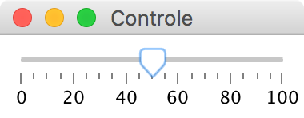

Principal > Documentos > Manual de dispositivos
Dispositivos de E/S para os simuladores
Os simuladores legsim e armsim permitem o uso de alguns dispositivos de entrada e saída, como botões e leds, para implementação de sistemas simulados.
O dispositivo Console, usado para ler e escrever caracteres, é o único que é instalado com a opção "-c" da linha de comando. Todos os outros dispositivos são instalados carregando um arquivo texto de descrição de dispositivos, usando a opção "-d" da linha de comando. No arquivo de descrição, linhas que se iniciam com o caractere `#' são ignoradas, e cada dispositivo é declarado em duas ou mais linhas, conforme descrito a seguir. Para cada dispositivo, a primeira linha indica o tipo dispositivo e o nome da janela em que ele será visualizado. As demais linhas indicam características do dispositivo, como portas e tipo de interrupção associados ao dispositivo.
Console
O dispositivo Console emula um console (um terminal tty) de um sistema operacional e permite ler e escrever cadeias de caracteres. Para carregar o Console, o simulador deve ser executado com a opção "-c" na linha de comando. A figura abaixo mostra o Console, que é dividido em duas áreas: uma área de entrada, composta por uma única linha, e uma área de saída, cujo número de linhas pode ser ajustado pelo tamanho da janela do Console.
Console
A comunicação do processador com a console utiliza a convenção EABI para chamadas a sistema. São definidas três chamadas a sistema, read, write e exit.
- read, para ler uma cadeia de caracteres da entrada.
reg0 deve conter o valor 0 (descritor stdin)
reg1 deve conter o endereço inicial de um vetor onde serão armazenados os bytes lidos
reg2 deve conter o número de bytes a serem lidos
reg7 deve conter o valor 3 (tipo read).
No retorno da chamada a sistema o registrador r0 contém o número de caracteres efetivamente lidos. - write, para escrever uma cadeia de caracteres na saída
reg0 deve conter o valor 1 (descritor stdout)
reg1 deve conter o endereço inicial da cadeia
reg2 deve conter o número de bytes a serem escritos
reg7 deve conter o valor 4 (tipo write) - exit, para terminar a execução do programa
reg0 deve conter o valor retornado pelo programa (zero se o programa terminou normalmente, ou indicador de erro caso contrário)
reg7 deve conter o valor 1 (tipo exit)
As instruções de chamadas a sistema devem ser executadas com valores especiais para serem interceptadas pelo simulador. No LEG, deve ser utilizada a instrução
sys 0x55
e no ARM deve ser utilizada a instrução
svc 0x55
Essas instruções não disparam o mecanismo de interrupção do simulador, mas executam os serviços de console. Elas não podem ser utilizadas para simular interrupções de usuário, já que são tratadas de forma especial pelo simulador.
Botões
Botões são dispositivos de leitura apenas. Existem dois tipos de botões disponíveis:-
liga/desliga , que fisicamente tem duas posições, e inverte de posição a cada vez que é pressionado. -
tecla , que também tem duas posições, mas normalmente fica em uma única posição (desligado), mudando para a outra posição (ligado) apenas enquanto pressionado.
Um botão tem apenas uma porta de entrada. Uma leitura na porta do botão retorna um byte de estado, com o bit menos significativo igual a 1 se o botão está ligado, ou 0 caso contrário. Botões são definidos em um painel de botões no arquivo de dispositivos. Até oito botões podem ser criados em um painel de botões. O formato da descrição de um painel de botões é
%buttons NOME_PAINEL NOME PORTA INTERRUPÇÃO TIPO
onde
- NOME_PAINEL é um nome que será usado na janela do painel.
- NOME é o nome do botão.
- PORTA é o endereço da porta do botão.
- INTERRUPÇÃO é o tipo da interrupção associada ao botão, gerada a cada vez que o botão é pressionado. Se o dispositivo não usa interrupção este valor deve ser zero.
- TIPO é o tipo de botão, devendo ser a letra T
(do inglês
toggle para o tipo liga/desliga ou P (do inglêspush ) para o tipo tecla.
%buttons Controle Conta 0x40 0x10 P Liga 0x41 0x00 T |
|
| (a) arquivo de configuração | (b) painel criado |
Teclado
O dispositivo teclado tem doze teclas, com dígitos de 0 a 9, mais os símbolos `*' e `\#'. Ele tem duas portas de leitura, a porta de estado e a porta de dados. O formato da descrição de um painel de botões é
%keyboard NOME_PAINEL PORTA_DADOS PORTA_ESTADO INTERRUPÇÃO
onde
- NOME_PAINEL é um nome que será usado na janela do painel.
- PORTA_DADOS é o endereço da porta de dados do botão, de leitura apenas. Uma leitura retorna um byte com o valor da última tecla pressionada. O valor retornado é um inteiro entre 0 e 11 (valor 10 indica a tecla `*', valor 11 indica a tecla `\#').
- PORTA_ESTADO é o endereço da porta de estado do botão,
de leitura apenas. Uma leitura nessa porta retorna um byte de estado. O bit~0
(bit menos significativo) do byte de estado indica se uma tecla foi
pressionada e não foi ainda lida (o valor~1 indica que tecla foi
pressionada). O bit 1 do byte de estado indica se houve erro de
atropelamento (em inglês,
overrun ), ou seja um dado foi perdido porque antes que tenha sido lido outra tecla foi pressionada (o valor~1 indica que houve erro). O estado do teclado é zerado a cada leitura na porta de dados ou de estado. - INTERRUPÇÃO é o tipo da interrupção associada ao teclado, gerada a cada tecla pressionada. Se o dispositivo não usa interrupção este valor deve ser zero.
Um único teclado pode ser colocado em cada painel de teclado. A Figura abaixo mostra um exemplo de arquivo de configuração de dispositivos com um painel de teclado, e a janela correspondente.
%keyboard Teclado
0x80 0x81 0x09
|
|
| (a) arquivo de configuração | (b) painel criado |
Temporizador
O temporizador é um dispositivo que gera uma interrupção a cada intervalo de tempo programado. O temporizador tem apenas uma porta de dados, que é usada para programar o intervalo de tempo. O formato de descrição de um temporizador é:
%timer PORTA INTERRUPÇÃO
onde
- PORTA é o endereço da porta de dados do temporizador, usada para programar o intervalo de tempo. O intervalo de tempo é dado como um valor inteiro, de 32 bits, em milisegundos. Se o intervalo de tempo é zero, o temporizador é desativado. Caso contrário uma interrupção é gerada a cada vez que o temporizador expira. O temporizador é automaticamente reinicializado com o valor programado a cada vez que expira.
- INTERRUPÇÃO é o tipo da interrupção associada ao temporizador.
%timer
0x90 0x20
|
| (a) arquivo de configuração |
LEDs
Leds podem ser de três cores, vermelho, amarelo e verde, e são definidos em um painel de leds. O formato da descrição de um painel de leds é%leds NOME_PAINEL LEDS PORTA_DADOS
onde
- NOME_PAINEL é um nome que será usado na janela do painel.
- LEDS é uma sequência de letras que especifica os leds do painel. Cada letra corresponde a um led, e pode ser r (vermelho), g (verde), y (amarelo) ou b (azul). Cada led é associado a um bit na palavra de dados. O led descrito pela letra mais à esquerda em LEDS corresponde ao led mais significativo do valor, que aparecerá mais à esquerda no painel de leds.
- PORTA_DADOS é o endereço da porta de dados do painel de leds, de escrita apenas. A escrita de um valor na porta de dados liga ou desliga os leds correspondentes.
Até oito leds podem ser colocados em cada painel de leds. A Figura abaixo mostra um exemplo de arquivo de configuração de dispositivos com um painel com cinco leds, e a janela correspondente.
%leds Sinais
rrygg 0x41
|
|
| (a) arquivo de configuração | (b) painel criado |
Mostrador de sete segmentos
O mostrador de sete segmentos é um dispositivo de escrita apenas que permite visualizar um dígito decimal ou outros símbolos simples, conforme a Figura (a) abaixo. Os segmentos do mostrador, mais o ponto decimal, podem ser individualmente ligados ou desligados escrevendo um byte de dados na porta do mostrador. Cada segmento corresponde a um bit no byte de dados, como indicado na Figura (b) abaixo.
O formato da descrição de um painel de mostradores de sete segmentos é
%7segs NOME_PAINEL PORTA_DADOS1 PORTA_DADOS2 ... PORTA_DADOS6
onde
- NOME_PAINEL é um nome que será usado na janela do painel.
- PORTA_DADOS1 a PORTA_DADOS6 são os endereços das portas de dados dos mostradores de sete segmentos, de escrita apenas. Até seis mostradores podem ser colocados num painel de mostradores. O mostrador mais à esquerda no painel é o primeiro da lista de mostradores, o mostrador mais à direita é o último da lista. A escrita de um byte na porta de dados liga os segmentos correspondentes do mostrador.
A Figura abaixo mostra um exemplo de arquivo de configuração de dispositivos para um painel com dois mostradores, e a janela correspondente.
%7segs Relógio
0x21
0x22
|
|
| (a) arquivo de configuração | (b) painel criado |
Controle deslizante
Um controle deslizante é um dispositivo de leitura apenas, com o qual o usuário pode ajustar um valor de entrada deslizando um acionador.O formato da descrição de um painel de controle deslizante
%slider NOME_PAINEL PORTA_DADOS INTERRUPÇÃO VALOR_MIN VALOR_MAX VALOR
onde
- NOME_PAINEL é um nome que será usado na janela do painel.
- PORTA_DADOS é o endereço da porta de dados do controle deslizante,
- INTERRUPÇÃO é o tipo da interrupção associada ao botão, gerada a cada vez que o botão é pressionado. Se o dispositivo não usa interrupção este valor deve ser zero.
- VALOR_MIN é o valor mínimo do controle.
- VALOR_MAX é o valor máximo do controle.
- VALOR é o valor inicial do controle.
Apenas um controle deslizante pode ser colocado em um painel. A Figura abaixo mostra um exemplo de arquivo de configuração de dispositivos para um painel com um controle deslizante, e a janela correspondente.
%slider Controle
0x91 6 0 100 50
|
 |
| (a) arquivo de configuração | (b) painel criado |
LCD
O LCD é um dispositivo de cristal líquido, capaz de mostrar até quatro linhas de caracteres, com até 20 caracteres cada. O dispositivo implementado é compatível, em termos de configuração e operação, com o padrão usado em LCDs comerciais, como por exemplo o Hitachi HD44780. O formato da descrição de um painel de LCD é:
%lcd NOME_PAINEL PORTA_COMANDO PORTA_DADOS COR TAMANHO
onde
- NOME_PAINEL é um nome que será usado na janela do painel.
- PORTA_COMANDOS é o endereço da porta de comandos do LCD.
- PORTA_DADOS é o endereço da porta de dados do LCD.
- COR especifica a cor do LCD, e pode ser blue (azul), green (verde) ou amber (laranja).
- TAMANHO especifica a dimensão do LCD (número de caracteres em cada linha e número de linhas), e pode ser 16x2, 20x2 ou 20x4.
Apenas um LCD pode ser colocado em um painel. A Figura abaixo mostra um exemplo de arquivo de configuração de dispositivos para um painel com um LCD, e a janela correspondente.
%lcd Mensagens 0x60 0x61 blue 20x2 |
|
| (a) arquivo de configuração | (b) painel criado |